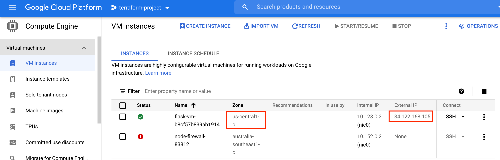

In this article, we are going to see what is terraform data source is and how it helps in Infrastructure as code
Before we begin, I want you to think of this requirement.
“Let’s say you have to create two similar infrastructure modules in two different regions of any of your favourite cloud environments. The first infra module is already created by the X team and you need to have the same configuration in your module.”
First Approach to this requirement is to go to that X team and ask for source files.
Let’s assume they are very protective about their source files and they say we cannot give you a whole set of files, but we can help you with our workspace name and outputs.
Now with this very minimal data how I can assure that my infra will be similar to the X team.?
that’s where terraform datasource comes into the picture.

Terraform DataSource
Data sources enable Terraform to use the information determined outside of Terraform, represented by different separate Terraform states or code, or changed by functions.
In other words, Cloud infrastructure, applications, and services transmit data, which Terraform can query and perform managing data sources.
For example, terraform manages data sources to retrieve information from cloud provider APIs, such as availability zone IDs or data about the piece of your infrastructure through the outputs of different Terraform states.
In this article, I am going to discuss how we can transfer data from one workspace to another workspace using terraform remote state data sources.
Prerequisites
-
A Google Cloud Platform account. If you do not have a GCP account, create one now. This tutorial can be completed using only the services included in the GCP free tier.
-
Terraform 0.15.3+Â installed locally.
Next, we need to set up a GCP
After creating a GCP account, create the following resources to enable Terraform to provision infrastructure:
-
A GCP Project: GCP organizes resources into projects. Create one now in the GCP console and make note of the project ID. You can see a list of your projects in the cloud resource manager. In my case, I have created a project called
terraform-project-337116 -
Google Compute Engine: Enable Google Compute Engine for your project in the GCP console. Make sure to select the project you are using to follow this tutorial and click the “Enable” button.
-
A GCP service account key: Create a service account key to enable Terraform to access your GCP account. When creating the key, use the following settings:
- Select the project you created in the previous step.
- Click “Create Service Account”.
- Give it any name you like and click “Create”.
- For the Role, choose “Project -> Editor”, then click “Continue”.
- Skip granting additional users access, and click “Done”.
After you create your service account, download your service account key.
- Select your service account from the list.
- Select the “Keys” tab.
- In the drop-down menu, select “Create new key”.
- Leave the “Key Type” as JSON.
- Click “Create” to create the key and save the key file to your system.
Now your GCP is completely set up to integrate with terraform
Creating The First Environment with Terraform
Creating necessary Files and Terraform workspace
Create a directory with some valid name (Eg: gcp-terraform-datasource-intg) and get into the same directory. Along with this create terraform workspace with the name ‘development’ and create below mentioned .tf files in the same workspace
mkdir gcp-terraform-datasource-intg cd gcp-terraform-datasource-intg terraform workspace new development terraform workspace select development
Next, create a couple of .tf files.
touch main.tf touch variables.tf touch provider.tf touch network.tf touch outputs.tf
Copy service account key json file into this directory (This file you need to download into your local)
Creating Template with Shell script to provision our machine
Create a folder with the name ‘template’ and create a .tpl file inside the template directory (eg: Here, I have created a file with the name install_flask.tpl)
This install_flask.tpl holds content for metadata-script, which will get executed when our GCP instance get spawned up via terraform scripts
cd gcp-terraform-datasource-intg mkdir template cd template touch install_flask.tpl
Copy below contents into .tpl file
#!/bin/bash
sudo apt-get update -y
sudo apt-get install -yq build-essential python-pip rsync
sudo apt-get install wget -y
pip install flask
sudo touch /tmp/app.py
sudo mkdir /tmp/templates
sudo chmod 777 /tmp/templates
sudo touch /tmp/templates/index.html
sudo cat << "EOF" > /tmp/templates/index.html
<!DOCTYPE html>
<html>
<style>
body {
font-size: 100px;
}
p {text-align: center;}
</style>
<body>
<span style='font-size:500px;text-align:center'>🌩</span>
<p>Welcome to the Cloud 😃</p>
</body>
</html>
EOF
sudo chmod 777 /tmp/templates/index.html
sudo cat << "EOF" > /tmp/app.py
from flask import Flask, render_template
app = Flask(__name__)
@app.route('/')
def index():
return render_template('index.html')
app.run(host='0.0.0.0')
EOF
sudo chmod 777 /tmp/app.py
sudo python /tmp/app.py
Basically, the above script will install/set up a python flask in the GCP instance and when we try to access it, it will give output as ‘Welcome to the cloud’ with nice emojis.
Defining Variables Needed
Now copy the below content into variables.tf
variable "project" {
default = "terraform-project-337116"
}
variable "region" {
default = "us-central1"
}
variable "image_family" {
default = "debian-9"
}
variable "image_project" {
default = "debian-cloud"
}
variable "vpc_name" {
default = "terraform-flask-vpcapp-network"
}
variable "zone" {
default = "us-central1-c"
}
variable "machine_type" {
default = "f1-micro"
}
variable "firewall_name" {
default = "fwapp"
}
Give attention to region, here we are creating instances in the us-central1 region.
The rest of the fields are self-explanatory, we are assigning variables and we use these variables in the rest of the .tf files.
Note – Update project variable with your project-id
Defining Providers
Next copy below content into provider.tf file
terraform {
required_providers {
google = {
source = "hashicorp/google"
version = "3.5.0"
}
}
}
provider "google" {
credentials = file("terraform-gcp.json")
project = var.project
region = var.region
}
Defining Networks
Next copy below contents into network.tf file
resource "google_compute_network" "vpc_network" {
project = var.project
name = var.vpc_name
auto_create_subnetworks = true
}
resource "google_compute_firewall" "fw" {
name = var.firewall_name
network = google_compute_network.vpc_network.name
allow {
protocol = "tcp"
ports = ["5000"]
}
}
Here we are creating virtual private cloud resources and assigning firewall rules in that VPC to allow 5000 port.
The main Terraform Manifest configuration file
Next copy below contents into main.tf
data "google_compute_image" "flask_image" {
family = var.image_family
project = var.image_project
}
data "template_file" "webapp" {
template = file("${path.module}/template/install_flask.tpl")
}
// Terraform plugin for creating random ids
resource "random_id" "instance_id" {
byte_length = 8
}
// A single Compute Engine instance
resource "google_compute_instance" "vm_instance" {
name = "flask-vm-${random_id.instance_id.hex}"
machine_type = var.machine_type
zone = var.zone
boot_disk {
initialize_params {
image = data.google_compute_image.flask_image.self_link
}
}
metadata_startup_script = data.template_file.webapp.rendered
network_interface {
network = google_compute_network.vpc_network.name
access_config {
// Include this section to give the VM an external ip address
}
}
}
Decoding the blocks in main.tf
Let’s see the functionality of each block of main.tf file.
In this data block we are creating a local data source to get google_compute_image.
data "google_compute_image" "flask_image" {
family = var.image_family
project = var.image_project
}
Reference: https://registry.terraform.io/providers/hashicorp/google/latest/docs/resources/compute_image
Here in this data block, we are creating template_file data source to read install_flask.tpl file from the relevant path.
In further steps, this data source is provided as input to the metadata script.
data "template_file" "webapp" {
template = file("${path.module}/template/install_flask.tpl")
}
Reference: https://registry.terraform.io/providers/hashicorp/template/latest/docs/data-sources/file
The following resource block contains code to generate random IDs which gets appended to the instance name.
// Terraform plugin for creating random ids
resource "random_id" "instance_id" {
byte_length = 8
}
In the following resource block, we are creating a single instance in us-central1 the region with boot_disk attached to same.
// A single Compute Engine instance
resource "google_compute_instance" "vm_instance" {
name = "flask-vm-${random_id.instance_id.hex}"
machine_type = var.machine_type
zone = var.zone
boot_disk {
initialize_params {
image = data.google_compute_image.flask_image.self_link
}
}
In the following line of code,
we pass the .tpl file we have created earlier data.template_file.webapp.rendered as input to the metadata script.
This metadata script will install/configure the python flask in the GCP instance.
metadata_startup_script = data.template_file.webapp.rendered
Here we are configuring network_interface for vpc and using access_config block we are assigning VM an external ip address
network_interface {
network = google_compute_network.vpc_network.name
access_config {
// Include this section to give the VM an external ip address
}
Defining the Outputs
Next copy the following content into outputs.tf
Here we are saving ip-address and script content (as sensitive content).
When we use, terraform will not print output results of the script in the console. this is a nice way to hide secret data during the execution
output "ip" {
value = google_compute_instance.vm_instance.network_interface.0.access_config.0.nat_ip
}
output "script"{
value = google_compute_instance.vm_instance.metadata_startup_script
sensitive = true
}
Now as all Terraform manifest tf files are in place, we are ready to execute terraform commands.
terraform init terraform validate terraform plan terraform apply --auto-approve
Here we are using --auto-approve with apply, which would take care of the usual prompt before making any change.
Validating the Output and Accessing the Application
Once terraform creates and configure infrastructure in a google cloud environment, you should see outputs in your console similar to below
Changes to Outputs: + ip = (known after apply) + script = (sensitive value) random_id.instance_id: Creating... random_id.instance_id: Creation complete after 0s [id=uM9XuDmrGRQ] google_compute_network.vpc_network: Creating... google_compute_network.vpc_network: Still creating... [10s elapsed] google_compute_network.vpc_network: Still creating... [20s elapsed] google_compute_network.vpc_network: Still creating... [30s elapsed] google_compute_network.vpc_network: Creation complete after 39s [id=projects/terraform-project-337116/global/networks/terraform-flask-vpcapp-network] google_compute_firewall.fw: Creating... google_compute_instance.vm_instance: Creating... google_compute_firewall.fw: Creation complete after 9s [id=projects/terraform-project-337116/global/firewalls/fwapp] google_compute_instance.vm_instance: Still creating... [10s elapsed] google_compute_instance.vm_instance: Creation complete after 19s [id=projects/terraform-project-337116/zones/us-central1-c/instances/flask-vm-b8cf57b839ab1914] Apply complete! Resources: 4 added, 0 changed, 0 destroyed. Outputs: ip = "34.122.168.105" script = <sensitive>
Now try to access the above external IP address with port 5000 (Eg: http://34.122.168.105:5000)
You should see the “Welcome to the cloud” message with some emojis as shown below

Meanwhile, you can see your created instance from the GCP console. Pay attention to the region, where instance got created in ‘us-central1’Â 
So far we have seen the instructions to set up our original/actual infrastructure. Let’s call it X with reference to our requirement we saw earlier.
Now we need to see how to Clone this infrastructure as a new one let’s call it Y using Terraform remote state data source.
Cloning the Infra with Terraform-remote-state data source
Next, we shall create instances with the same configuration in us-west1 region using terraform-remote-state data source.
Now create one more terraform workspace with the name ‘test’ under the same directory or create a new directory and copy the following tf files
- main.tf
- variables.tf
If you are using the same files, just create a workspace
terraform workspace create test terraform workspace select test
Now Change region from us-central1 to us-west1 in variables.tf file.
Along with this update, change the name for vpc and firewall, just to differentiate one from development workspace resources
variable "project" {
default = "terraform-project-337116"
}
variable "region" {
default = "us-west1"
}
variable "image_family" {
default = "debian-9"
}
variable "image_project" {
default = "debian-cloud"
}
variable "vpc_name" {
default = "terraform-flask-westnetwork"
}
variable "zone" {
default = "us-west1-b"
}
variable "machine_type" {
default = "f1-micro"
}
variable "firewall_name" {
default = "fwwest"
}
Now add terraform_remote_state Datasource block in main.tf file as below
data "terraform_remote_state" "developmentwsdata" {
backend = "local"
config = {
path = "${path.module}/terraform.tfstate.d/development/terraform.tfstate"
}
}
Here path should be the relevant path where your terraform.tfstate file is stored. In general, when we create terraform workspace
terraform will create a directory with a name terraform.tfstate.d and we can list all created workspace inside this directory. So, in general, your path should be
path = "<path to folder where .tf files are located>/terraform.tfstate.d/<your source workspace>/terraform.tfstate"
If you are getting the tfstate file from somewhere/someone else just place it in a directory and refer to the fully qualified path.
Next update metadata_script line in main.tf as below
Here we are reading a script from the previous state (development) as an output variable and providing the same as the input to the target workspace (test), so that the same configuration is reflected in a newly created instance.
metadata_startup_script = data.terraform_remote_state.developmentwsdata.outputs.script
If everything goes fine, you should see an output log similar to below
Changes to Outputs: + ip = (known after apply) random_id.instance_id: Creating... random_id.instance_id: Creation complete after 0s [id=yMvh2E-5IWQ] google_compute_network.vpc_network: Creating... google_compute_network.vpc_network: Still creating... [10s elapsed] google_compute_network.vpc_network: Still creating... [20s elapsed] google_compute_network.vpc_network: Still creating... [30s elapsed] google_compute_network.vpc_network: Creation complete after 39s [id=projects/terraform-project-337116/global/networks/terraform-flask-westnetwork] google_compute_firewall.fw: Creating... google_compute_instance.vm_instance: Creating... google_compute_firewall.fw: Creation complete after 8s [id=projects/terraform-project-337116/global/firewalls/fwwest] google_compute_instance.vm_instance: Still creating... [10s elapsed] google_compute_instance.vm_instance: Creation complete after 17s [id=projects/terraform-project-337116/zones/us-west1-b/instances/flask-vm-c8cbe1d84fb92164] Apply complete! Resources: 4 added, 0 changed, 0 destroyed. Outputs: ip = "34.82.35.198"
Now again try to access an external IP address with 5000 port (eg: http://34.82.35.198:5000)
You should see the `Welcome to the cloud Message`
You can validate from the GCP console that two separate instances are created in two regions us-central1 and us-west1 respectively.

Finally, don’t forget to clean up your infrastructure using terraform destroy command.
terraform destroy --auto-approve
This proves we have successfully configured two separate instances with similar configurations in two separate regions using terraform remote state data sources.
Complete source code is available here https://github.com/sheldon-cooper26/gcp-terraform-datasource-application
Hope you liked this post. Thanks for reading!!
Thanks and Regards,
Tapan Hegde


{kind=link}
{kind=link}